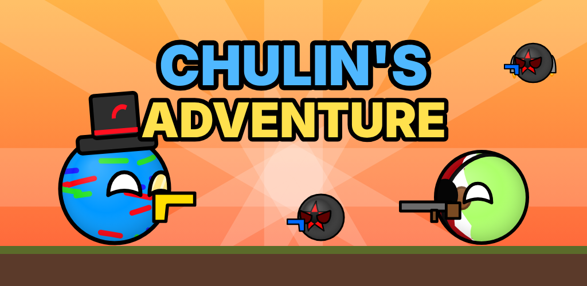
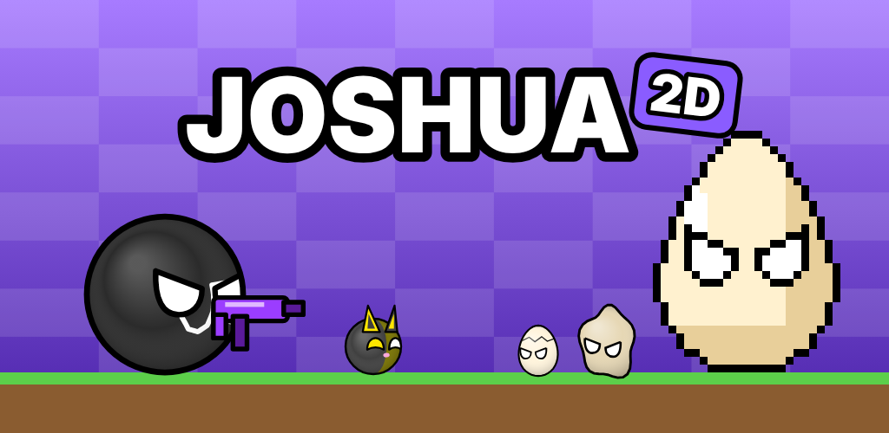

Chulin's Adventure
Chulin, Mexicano, los Secuaces y el Imperialista. Los 20 niveles, los cristales y Chulin Eléctrico.
Todo sobre los juegos de MaJo Associations: historias completas, personajes, mundos, jefes, finales y secretos.

Chulin, Mexicano, los Secuaces y el Imperialista. Los 20 niveles, los cristales y Chulin Eléctrico.

Joshua, Purriau, MegaEGG, Ball Oscuro y Kritex. El Felino Nevado, los finales y MEGAKRITEX.

Pancho, Hamburguer, el Hombre Tutor y Panchita. El Fooworld, el Foogame, la elección y los dos finales.
El grupo, Sulu Entertainment, Brane Virtuals, MaJo Maker, Colectucus y cómo se conectan los tres juegos.